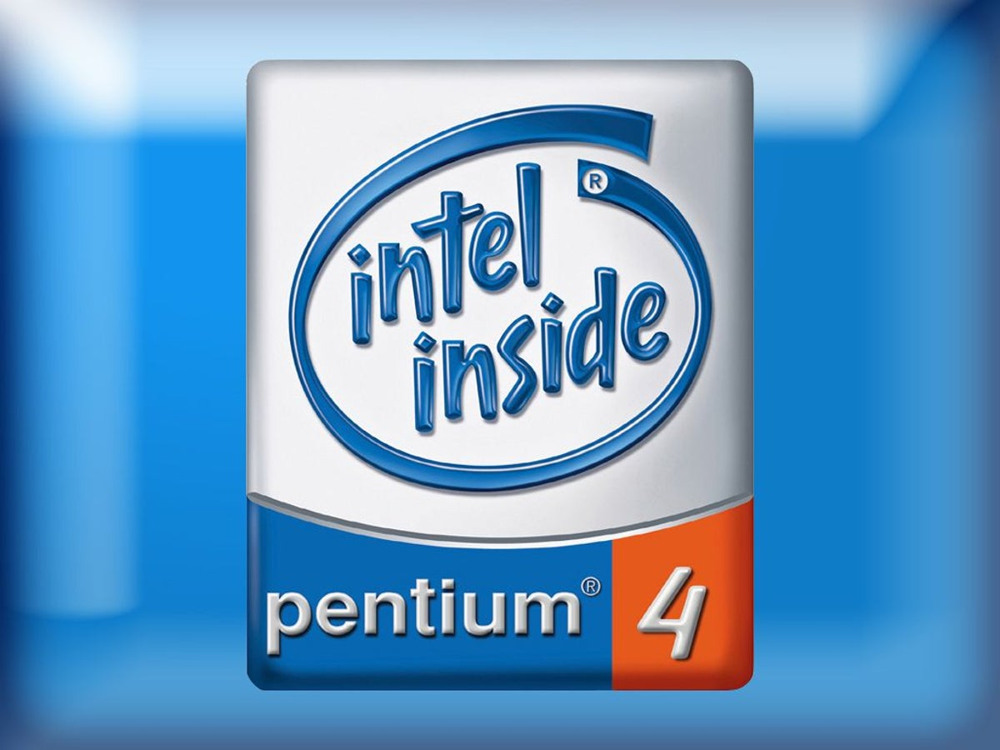
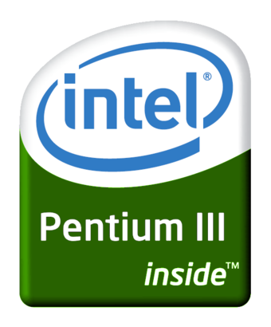
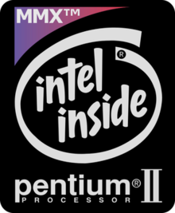
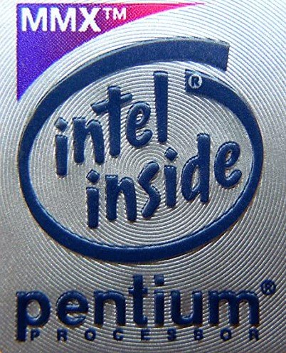

El Pentium 4
 El Pentium 4 fue una línea de microprocesadores de séptima generación basado en la arquitectura x86 y fabricado por Intel. Es el primer microprocesador con un diseño completamente nuevo desde el Pentium Pro de 1995. El Pentium 4 original, denominado Willamette, trabajaba a 1,4 y 1,5 GHz; y fue lanzado el 20 de noviembre de 2000.1 El 8 de agosto de 2008 se realiza el último envío de Pentium 4,2 siendo sustituido por los Intel Core Duo Para sorpresa de la industria informática, la nueva microarquitectura NetBurst del Pentium 4 no mejoró en rendimiento al viejo diseño de la microarquitectura Intel P6 del Pentium III, según las dos tradicionales formas para medir el rendimiento: velocidad en el proceso de enteros u operaciones de coma flotante. La estrategia de Intel fue sacrificar el rendimiento de cada ciclo para obtener a cambio mayor cantidad de ciclos por segundo y una mejora en las instrucciones SSE. En 2004, se agregó el conjunto de instrucciones x86-64 de 64 bits al tradicional set x86 de 32 bits. Al igual que los Pentium II y Pentium III, el Pentium 4 se comercializa en una versión para equipos de bajo presupuesto (Celeron), y una orientada a servidores de gama alta (Xeon).
El Pentium 3
 Katmai La primera versión era muy similar al Pentium II (usaba un proceso de fabricación de 250 nanómetros), con la introducción de SSE como principal diferencia. Además, se había mejorado el controlador del caché L1, lo cual aumentaba ligeramente el desempeño. Los primeros modelos tenían velocidades de 450 y 500 MHz. El 17 de mayo de 1999 se introdujo el modelo de 550 MHz y el 2 de agosto del mismo año el de 600 MHz. Posteriormente (antes de la salida del Coppermine), salieron versiones de 133 MHz de Bus. Coppermine Esta versión tenía memoria caché L2 de 256 KiB integrada, lo cual mejoró significativamente el rendimiento en comparación con Katmai. Estaba construido con un proceso de 180 nanómetros. El 25 de octubre de 1999, se empezaron a vender los microprocesadores de 500, 533, 550, 600, 650, 667, 700 y 733 MHz. Entre diciembre de 1999 y mayo de 2000, Intel lanzó los modelos operando a 750, 800, 850, 866, 933 y 1000 MHz.junto con ambos slots Una versión de 1,13 GHz fue introducida al mercado poco después, pero debió ser cancelada por ser excesivamente inestable. El problema residía en que la memoria caché integrada tenía problemas para trabajar a más de 1 GHz. La primera generación de la consola Xbox usa este procesador en una versión más estable de 733 MHz, con 128 KiB de cache L2 acondicionado para un uso de la GPU Y de acceso a sistema mucho más eficiente Tualatin La tercera y última versión fue en cierto modo una prueba del nuevo proceso de 130 nanómetros, aunque también se hicieron en 135 nanómetros. Es probable que si el Pentium 4 hubiese estado listo antes, la serie Tualatin no habría visto la luz. Los Tualatin tenían un buen desempeño, especialmente los modelos con 512 KiB de caché L2 (llamados Pentium III-S). La Serie III-S estaba enfocada al mercado de servidores. Entre el 2001 y los primeros meses del 2002, Intel introdujo microprocesadores Tualatin a velocidades de 1,13, 1,2, 1,26 y 1,4 GHz, pero tenían el problema de que las placas comunes de aquel entonces (Slot 1 y Socket 370) no eran todas compatibles con los Tualatin. Las placas madre compatibles con Tualatin eran escasas, y si un consumidor deseaba adquirir una, optaría por una para Pentium 4 que ya estaba casi liderando en el mercado de los procesadores
El Pentium 2
El Pentium II es un microprocesador con arquitectura x86 diseñado por Intel, introducido en el mercado el 7 de mayo de 1997. Está basado en una versión modificada del núcleo P6, usado por primera vez en el Intel Pentium Pro. Los cambios fundamentales respecto a este último fueron mejorar el rendimiento en la ejecución de código de 16 bits, añadir el conjunto de instrucciones MMX y eliminar la memoria caché de segundo nivel del núcleo del procesador, colocándola en una tarjeta de circuito impreso junto a este. El Pentium II se comercializó en versiones que funcionaban a una frecuencia de reloj de entre 166 y 450 MHz. La velocidad de bus era originalmente de 66 MHz, pero en las versiones a partir de los 333 MHz se aumentó a 100 MHz. Poseía 32 KiB de memoria caché de primer nivel repartida en 16 KiB para datos y otros 16 KiB para instrucciones. La caché de segundo nivel era de 512 KiB y trabajaba a la mitad de la frecuencia del procesador, al contrario que en el Pentium Pro, que funcionaba a la misma frecuencia. Las primeras versiones del TagRam, únicamente podían direccionar hasta 512MB de memoria principal de forma cacheada, posteriormente hasta 4GB, aún pudiendo direccionar más de 512 MB de memoria física en las primeras versiones. Como novedad respecto al resto de procesadores de la época, el Pentium II se presentaba en un encapsulado SECC, con forma de cartucho. El cambio de formato de encapsulado se hizo para mejorar la disipación de calor. Este cartucho se conecta a la placa base de los equipos mediante una ranura Slot 1. El Pentium II integra 7,5 millones de transistores. El siguiente procesador de la familia Pentium es el Pentium III. Durante su lanzamiento, la compañía Intel hizo un acuerdo con los estudios Fox para realizar un comercial en el que aparece Homer Simpson, quien está en las oficinas de Intel para la implantación de un microprocesador Intel Pentium II en su cerebro, para volverlo más inteligente. Al final, cuando aparece el tema de Intel, se puede oír el clásico D'oh de Homer. El comercial fue lanzado incluso en Latinoamérica y, en ambos casos, Homer tuvo su voz original (Dan Castellaneta en E.U.A. y Humberto Vélez en Latinomérica). De Igual modo y en la misma serie también en un especial de Halloween de la época, se plasma el logo "Intel Inside" en la bomba de neutrones que destruiria a springfield(aunque en este caso fue como parodia también fue parte del acuerdo).
El Pentium 1
 Intel Pentium es una gama de microprocesadores de quinta generación con arquitectura x86 producidos por Intel Corporation. El primer Pentium se lanzó al mercado el 22 de marzo de 1993,1 con velocidades iniciales de 60 y 66 MHz, 3.100.000 transistores, caché interno de 8 KiB para datos y 8 KiB para instrucciones; sucediendo al procesador Intel 80486. Intel no lo llamó 586 debido a que no es posible registrar una marca compuesta solamente de números. Pentium también fue conocido por su nombre clave P54C. Se comercializó en velocidades entre 60 y 200 MHz, con velocidad de bus de 50, 60 y 66 MHz. Las versiones que incluían instrucciones MMX no sólo brindaban al usuario un mejor manejo de aplicaciones multimedia, como por ejemplo, la lectura de películas en DVD sino que se ofrecían en velocidades de hasta 233 MHz, incluyendo una versión de 200 MHz y la más básica proporcionaba unos 166 MHz de reloj. La aparición de este procesador se llevó a cabo con un movimiento económico impresionante, acabando con la competencia, que hasta entonces producía procesadores equivalentes, como es el 80386, el 80486 y sus variaciones o incluso NPUs.
El 4004
 El 4004 fue lanzado en un paquete de 16 pines CERDIP el 15 de noviembre de 1971. El 4004 fue el primer procesador de computadora diseñado y fabricado por el fabricante de chips Intel, quien previamente hacía semiconductores de chips de memoria.1 Marcian "Ted" Hoff formuló la propuesta arquitectónica en 1969. sin embargo, la implementación del microprocesador sólo comenzó en 1970 cuando Federico Faggin fue empleado por Intel, procedente de Fairchild Semiconductor, para dirigir el proyecto y para diseñar el 4004 (1970-1971).2 En Fairchild, Faggin había desarrollado la tecnología pionera llamada Silicon Gate Technology (SGT) y había también diseñado el primer circuito integrado MOS usando la tecnología SGT (el Fairchild 3708), en 1968, demostrando la viabilidad de la nueva tecnología. Tan pronto como empezó a trabajar para Intel, Faggin creó una nueva metodología de "random logic design" con silicon gate, que no existía previamente, y que la utilizó para encajar el microprocesador en un único chip. Su metodología fue usada en todos los primeros diseños de microprocesadores de Intel (8008, 4040, 8080). Masatoshi Shima de Busicom asistió a Faggin durante el desarrollo de la familia 4004 y más tarde escribió el software para la calculadora Busicom. Shima se unió a la compañía ZiLOG, la primera compañía dedicada exclusivamente a microprocesadores, fundada por Federico Faggin a finales del 1974, y desarrolló el diseño del Z80 con Faggin.
Originalmente diseñado para la compañía japonesa Busicom para ser usado en su línea de calculadoras, el 4004 también fue proporcionado con una familia de chips de soporte especialmente diseñados para él.1 Por ejemplo, cada "ROM de programa" internamente guardaba para su propio uso los 12 bit de dirección de programa del 4004, lo que permitía, si las 16 ROM fueron instaladas, acceso de 4 KB de memoria desde el bus de direcciones de 4 bits. El circuito 4004 fue construido con 2.300 transistores, y fue seguido el año siguiente por el primer microprocesador de 8 bits, el 8008, que contenía 3.300 transistores, y el 4040, que era una versión revisada del 4004.
Como su cuarta entrada en el mercado de microprocesadores, Intel lanzó el CPU que comenzó la revolución del microcomputador, el 8080, usado en el Altair 8800.
El 4004 fue lanzado en un paquete de 16 pines CERDIP el 15 de noviembre de 1971. El 4004 fue el primer procesador de computadora diseñado y fabricado por el fabricante de chips Intel, quien previamente hacía semiconductores de chips de memoria.1 Marcian "Ted" Hoff formuló la propuesta arquitectónica en 1969. sin embargo, la implementación del microprocesador sólo comenzó en 1970 cuando Federico Faggin fue empleado por Intel, procedente de Fairchild Semiconductor, para dirigir el proyecto y para diseñar el 4004 (1970-1971).2 En Fairchild, Faggin había desarrollado la tecnología pionera llamada Silicon Gate Technology (SGT) y había también diseñado el primer circuito integrado MOS usando la tecnología SGT (el Fairchild 3708), en 1968, demostrando la viabilidad de la nueva tecnología. Tan pronto como empezó a trabajar para Intel, Faggin creó una nueva metodología de "random logic design" con silicon gate, que no existía previamente, y que la utilizó para encajar el microprocesador en un único chip. Su metodología fue usada en todos los primeros diseños de microprocesadores de Intel (8008, 4040, 8080). Masatoshi Shima de Busicom asistió a Faggin durante el desarrollo de la familia 4004 y más tarde escribió el software para la calculadora Busicom. Shima se unió a la compañía ZiLOG, la primera compañía dedicada exclusivamente a microprocesadores, fundada por Federico Faggin a finales del 1974, y desarrolló el diseño del Z80 con Faggin.
Originalmente diseñado para la compañía japonesa Busicom para ser usado en su línea de calculadoras, el 4004 también fue proporcionado con una familia de chips de soporte especialmente diseñados para él.1 Por ejemplo, cada "ROM de programa" internamente guardaba para su propio uso los 12 bit de dirección de programa del 4004, lo que permitía, si las 16 ROM fueron instaladas, acceso de 4 KB de memoria desde el bus de direcciones de 4 bits. El circuito 4004 fue construido con 2.300 transistores, y fue seguido el año siguiente por el primer microprocesador de 8 bits, el 8008, que contenía 3.300 transistores, y el 4040, que era una versión revisada del 4004.
Como su cuarta entrada en el mercado de microprocesadores, Intel lanzó el CPU que comenzó la revolución del microcomputador, el 8080, usado en el Altair 8800.
Desarrollador= Santiago Herbes